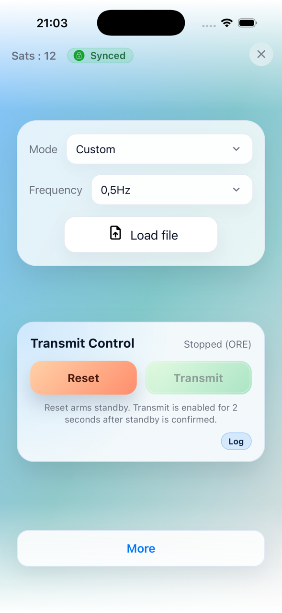
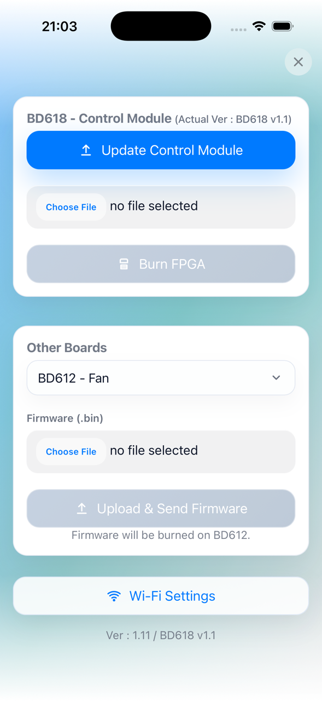
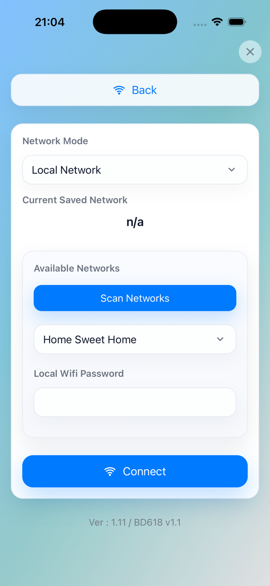

Using the Web Interface
Overview
When Wi-Fi is enabled on the ZT-100, the device hosts a web interface that mirrors the front-panel controls and provides administrative tools.
Mobile App Availability
The app is available on the Apple App Store as Zonge ZT-100. An Android version is planned for release soon.
Hotspot mode (default):
Join the device Wi-Fi network (SSID typically ZT-100).
Open a browser and go to
http://10.10.10.10/.Or use the mobile app, which automatically connects to the correct network and IP address.
If the device is on a local network, use its IP address instead.
Main Page Controls
The main page shows GPS status, sync status, mode, and frequency. It also provides transmit control and the TX log.

|

|
Mode
Select 100% DC, 50%, Custom, or MMR 5Hz.
In Basic XMT mode, only 100% DC and 50% appear.
In Advanced XMT mode, all four modes appear.
Frequency
Sets frequency from 0.0078125 Hz up to 8192 Hz.
In 50% mode the maximum is limited (currently 32 Hz).
In MMR 5Hz mode, frequency selection is hidden.
Custom Files (Custom mode)
A file loader and file list appear only in Custom mode.
Upload .usm files. The UI rejects files larger than 256 KB.
Use the list to select the active custom file.
{kind=link}

Transmit Control
RESET: Starts the reset/arm sequence, or stops transmit.
TRANSMIT: Starts transmit during the arm window, or stops transmit.
Status line: Shows Stopped, Standby ready, Transmitting, and includes the current status label in parentheses.
More
Opens a panel with GPS time, latitude, longitude, altitude, and XMT Mode (Basic/Advanced).
You can switch between Basic and Advanced here, or from the device screen menu (More Info -> XMT Mode).
How to Transmit (Web UI)
Click Reset.
You then have about 2 seconds to click Transmit.
If everything is fine and load checks pass, transmit starts.
Click Stop to end transmit.
Admin Page
Navigate to /admin for firmware and FPGA updates.
Update Main Firmware: Upload the firmware for the main controller.
Burn FPGA: Upload the FPGA image.
Other Hardware Targets: Select the target listed in the UI and upload the matching firmware file.
{kind=link}

If the selected target and firmware file do not match, the upload is rejected.
Wi-Fi Settings Page
Navigate to /wifi from the Admin page.
Network Mode: Hotspot or Local Network.
Scan Networks: Populate the available SSID list.
Connect: Apply the selected mode and credentials.
{kind=link}
